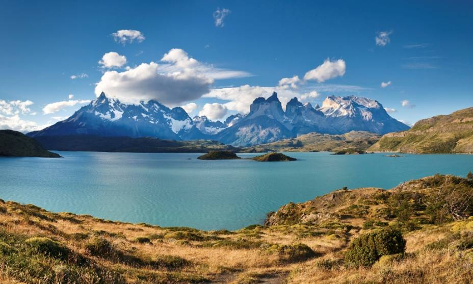

Le Chili en quelques mots
 Magnifique et lointain, le Chili possède la géographie la plus extravagante au monde. Imaginez une bande de terre, étroite et longue de 4 300 km qui se termine en un semis d’îlots
qui lie 2 océans… Du nord au sud, soit la distance de Paris à Téhéran, que d’extrêmes et de diversité dans ces paysages ! Le Chili ne connaît-il pas des records de sécheresse et d’humidité ? Étrange et fascinant pays adossé à la cordillère
des Andes, son rempart de feu et de neige, voilà un superbe balcon naturel qui domine l'océan Pacifique. D’où l’impression en arrivant à Santiago de tourner le dos au monde, d’être arrivé au bout du chemin… Du désert d’Atacama, au
nord du Chili, jusqu’à la barrière des Andes en passant par les vignobles de la plaine centrale au climat méditerranéen, que de kilomètres vous attendent. De Santiago à Puerto Montt, de l’île de Chiloë à Punta Arenas, le grand Sud
austral se faufile vers l’extrémité du continent avec des airs d’Alaska latino-américain. Le Chili a une géographie folle, mais cette démesure reste malgré tout à la porté de tous, à condition de savoir où et quand y aller. Quand on
crève de chaud dans le Nord, il peut geler dans le Sud. N’oublions pas enfin l’île de Pâques, petit point perdu dans le Pacifique. À 4h d’avion de Santiago, c’est l’île habitée la plus isolée du monde, où d’étranges et fabuleux colosses
de pierre regardent le ciel étoilé sans jamais révéler vraiment leur mystère.
Santiago, la capitale
Santiago ou Santiago du Chili (en espagnol : Santiago de Chile) est la capitale du Chili, pays d'Amérique latine. Elle est située dans la Vallée Centrale. Ses habitants s’appellent les Santiagois (Santiaguinos en espagnol). D’après le
recensement de l'Instituto Nacional de Estadísticas, l'agglomération de Santiago comptait en 2009 plus de 5,1 millions d'habitants. La région Métropolitaine de Santiago s’est largement développée au cours du xxe siècle, rassemblant
plus de 7 millions d'habitants en 2009. Fondée en 1541, Santiago est la capitale chilienne depuis l'époque coloniale. La ville se vante d'un centre ville à l'architecture néoclassique et aux rues sinueuses, parsemées notamment de styles
Art déco et néo-gothique. Le paysage urbain de Santiago est formé par des collines indépendantes et la ville est traversée par la rivière Mapocho, jalonnée par d'élégants parcs tels le Parque Forestal. L'imposante cordillère des Andes
est visible depuis de nombreux endroits de la ville. L'activité urbaine a causé le développement de nuages de pollution, particulièrement durant les mois d'hiver. La ville est entourée par des vignobles et Santiago reste à quelques
heures des montagnes et de l'océan Pacifique. La croissance économique régulière de Santiago depuis quelques décennies a transformé la ville en une métropole moderne. Santiago accueille aujourd'hui un nombre croissant de théâtres,
de restaurants et de centres commerciaux. L'expansion et le panorama urbain se développent, comprenant le plus grand bâtiment d'Amérique latine, la Gran Torre Santiago. La ville compte plusieurs grandes universités et développe des
infrastructures de transports modernes telle qu'une autoroute en partie souterraine et le métro de Santiago, le système le plus étendu d'Amérique du Sud. Santiago est le centre culturel, politique et financier du Chili, le centre des
sièges régionaux des entreprises multinationales, ainsi que du pouvoir exécutif et judiciaire, excepté celui du Congrès situé à Valparaíso.
Les incontournables
Que faire, que voir, que visiter ? Explorer les vignobles autour de Santiago. Arpenter les collines de Valparaíso. Suivre les pas et la pensée de Pablo Neruda dans sa maison d'Isla Negra. Visiter l'observatoire astronomique del Pangue
et s'émerveiller de la pureté du ciel et de l'intensité de la Voie lactée. Découvrir au petit matin, à 4300 m d'altitude, le spectacle des geysers du Tatio. Compter les taches roses des flamants semés sur les eaux opalescentes du salar d'Atacama.
Déambuler dans la ville fantôme de Humberstone. Faire le trek mythique du « W », dans le parc national Torres del Paine. Naviguer dans le détroit de Magellan...
Geysers du Tatio
À 4 320 m d'altitude, une quarantaine de geysers avec des fumerolles de 10 m, dans un paysage de montagnes et de volcans
Isla de Chiloé (Île de Chiloé) Petite île isolée, an patrimoine culturel préservé ; vestiges historiques, églises centenaires, cimetières de campagne et maisons en bois multicolores
Parc national Lauca Frontalier à la Bolivie, l'un des plus beaux parcs nationaux du nord du Chili, classé réserve de la Biosphère ; le volcan Parinacota (6 342 m), les vigones, alpagas et lamas
Parc national Torres del Paine Le trek mythique du « W », entre aiguilles rocheuses, glaciers millénaires et lacs aux eaux bleutées
San Pedro de Atacama Village en plein désert d’Atacama, ses maisons en adobe, sa petite église pittoresque, bonne base pour des excursions dans le désert
Santiago du Chili Capitale entre cordillère des Andes et cordillère de la Costa ; la colline cerro San Cristóbal et le parque Metropolinato ; les vignobles des alentours
Vallée de la Lune Une beauté géologique : vallée aux paysages lunaires, aux concrétions salines à perte de vue, ; panorama lunaire le long de la crête
Valparaíso Derrière une baie pittoresque, un dédale de ruelles aux maisons coloniales ; un amphithéâtre de collines offrant de belles vues sur la baie
Volcan Licancabur Sur la frontière chico-bolivienne, volcan au cône parfait, culminant à 5 916 m entre le Chili et la Bolivie, ascension possible du côté bolivien
Volcan Villarrica Une excursion incontournable dans la roche volcanique et les neiges éternelles ; du sommet, vue sur les 7 volcans et plusieurs lacs